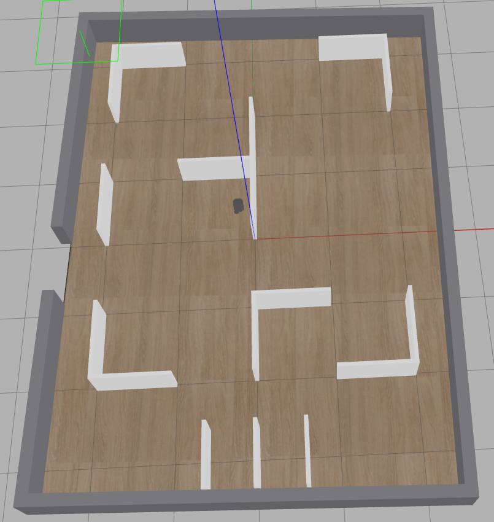

Robótica Computacional 2026.1 - AI
Instruções para a avaliação:
- A prova tem duração de 4 horas.
- Inicie a prova no Blackboard para a ferramenta do Smowl ser iniciada.
- O Smowl é obrigatório durante toda a prova.
- Só finalize o Blackboard quando enviar a prova via Github Classroom incluindo o hash do último commit na resposta do Blackboard.
- Durante a prova vamos registrar, a camera, a tela, as páginas visitadas, os acessos online e os registro do teclado.
- Coloque seu
nomeeemailnoREADME.mddo seu repositório. - A prova deverá ser realizada de forma individual.
- Não é permitido consultar a internet, com exceção do site da disciplina, do
Blackboarde do repositório da avaliação criado através do GitHub Classroom. Não é permitido o uso de ferramentas de **IA** como chatGPT, Copilot, Gemini ou similares durante a prova.Não é permitido o uso de ferramentas colaborativas como Google Docs, Google Slides, ou similares durante a prova.Não é permitido o uso de ferramentas de comunicação como Discord, WhatsApp, Telegram ou similares durante a prova.Não é permitido o uso de editores de codigo com IA como Cursor ou Windsurf durante a prova, sendo permitido apenas o uso do **VSCode**.Não é permitido o uso do Copilot durante a prova. Então desative-o antes de iniciar a prova.Não é permitido o uso de redes sociais, fóruns ou plataformas de comunicação durante a prova.- Faça commits e pushes regularmente de sua avaliação.
- Eventuais avisos importantes serão realizados em sala durante a prova.
- Escreva a frase "yey" como a resposta da soma no arquivo
README.mdcomo teste de sua atenção. - A responsabilidade por
infraestrutura,configuraçõesesetupem funcionamento pleno, é de cada estudante. -
SÓ SERÃO ACEITOS REPOSITÓRIOS DE ALUNOS QUE ASSINARAM A LISTA DE PRESENÇA.
-
BOA PROVA!
Atualização do Pacote (ROS 2)
Execute os comandos abaixo para atualizar os pacotes da ros2 obrigatórios para a prova:
cd ~/colcon_ws/src/my_simulation
git add .
git stash
git pull
cb
Configuração do Pacote (ROS 2)
-
Preparação Inicial: Primeiro, aceite o convite do GitHub Classroom e clone o repositório dentro da pasta
colcon_ws/src/no seu SSD. -
Criação do Pacote ROS 2: Dentro do diretório do seu repositório, crie um novo pacote chamado
avaliacao_ai.- Dica: Para utilizar os módulos desenvolvidos no capitulo 3, inclua o pacote
robcomp_utile o pacoterobcomp_interfacescomo dependência do seu pacote, e então, importe como nos exemplos do capitulo 3.
- Dica: Para utilizar os módulos desenvolvidos no capitulo 3, inclua o pacote
Exercício 0 - Organização & Qualidade
Este exercício avalia a organização e a qualidade dos vídeos dos exercícios e do arquivo README.md.
Critérios de Avaliação:
- O pacote foi corretamente configurado.
- As dependências do pacote estão corretas.
- Os diretórios e arquivos estão organizados de forma adequada.
- Todos os scripts estão na pasta
avaliacao_aidentro do pacoteavaliacao_ai. - A configuração dos nós foi realizada corretamente.
- Os nós da ROS 2 foram executados utilizando o comando
ros2 run. - Vídeo: A ação do robô é claramente compreensível pelo vídeo.
- README.md: O link do vídeo foi adicionado corretamente no campo indicado.
- README.md: O arquivo
README.mdcontém o nome completo e o e-mail do estudante.
Exercício 1 - Simon Diz (5,0) (Desafio: +1,0)

Baseando-se no código base_control.py do capítulo 3, crie um arquivo chamado q1.py contendo uma classe denominada JogadorSimon. Esta classe deve implementar um nó chamado jogador_simon_node, responsável por fazer com que o robô simulado jogue o jogo Simon Diz.
No início da execução, o robô deve publicar que está pronto para o Simon, informando também o horário atual e o nome do jogador nos campos apropriados da mensagem. Imediatamente após isso, o robô deve começar a andar para frente.
Sempre que encontrar uma parede à frente, o robô deve parar e informar ao Simon quais lados estão disponíveis para movimento naquele ponto. As possibilidades são (literalmente):
direita e esquerdadireitaesquerdanenhuma
O Simon irá verificar se os lados informados estão corretos e então poderá agir de uma das seguintes formas:
- publicar
Simon diz: vire para a direita - publicar
Simon diz: vire para a esquerda - publicar um comando sem a expressão
Simon diz:
O robô só pode executar um movimento se o comando recebido começar com Simon diz:. Se o robô se mover quando Simon não tiver falado Simon diz: ..., Simon publicará no tópico que o jogador perdeu. Nesse caso, o robô deve parar e não deve mais se mover, sendo necessário reiniciar o nó. Caso o robô não se mova, Simon pode publicar o próximo comando depois de um pequeno intervalo de tempo, portanto o robô pode apenas esperar e não se mover até receber um comando válido.
Se o robô obedecer corretamente aos comandos válidos, ele deve continuar avançando no labirinto e repetindo o processo até chegar a uma posição em que nenhuma direção esteja disponível. Quando o robô publicar que nenhuma direção está disponível, Simon encerrará o jogo, publicando o nome do aluno vencedor e o tempo total em segundos.
Modo deterministico
Se o robô publicar modo_de_jogo = deterministico, Simon deixará de escolher direções aleatoriamente e passará a sempre enviar o próximo comando de uma sequência já definida, de forma a levar o robô ao final do percurso em numero de passos predefinido.
Nesse modo, não há escolha aleatória e comandos invalidos, o objetivo é completar o percurso no menor tempo possível, obedecendo às regras do Simon.
Simulador
Utilize o comando abaixo para iniciar o simulador no mapa da prova:
ros2 launch my_gazebo responde.launch.py
O nó criado deve:
- Publicar e assinar no tópico
\simon_says, utilizando o tipo de mensagem especifico do topico. - Ao iniciar, publicar literalmente a menssagem simon, eu estou pronto, com horário atual e nome do aluno nos campos apropriados.
- Na primeira mensagem, preencher o campo
statuscomoREADY; nas mensagens de direções, preencherstatuscomoIN_PROGRESS. - Opcionalmente preencher o campo
modo_de_jogo = deterministicopara disputar o desafio de menor tempo. - Após avisar que está pronto, começar a andar para frente.
- Sempre que detectar uma parede à frente, informar ao Simon quais lados estão disponíveis.
- Executar movimentos somente quando receber comandos iniciados por
Simon diz:. - Se receber um comando sem
Simon diz:, o robô deve permanecer parado e aguardar o próximo comando. - Quando o jogo terminar com sucesso, o robô deve imprimir no terminal o nome do aluno vencedor e o tempo total recebido do Simon, então, o nó deve ser finalizado automaticamente.
Requisitos
- Deve existir o arquivo chamado
q1.py. - O programa deve ser executado sem erros.
- A classe deve ser chamada
JogadorSimon. - A implementação deve seguir a estrutura da classe e de máquina de estados do exemplo
base_control.py. - A função
controldeve ser a única a publicar no tópico/cmd_vel. - Todas as decisões de controle devem ocorrer dentro dos nós, sem alterações na função
control. - Não utilizar loops infinitos ou
sleepdurante o controle do robô. - Não utilizar loops
whiledentro dos estados de controle, a máquina de estados e as ações devem ser acionadas apenas por callbacks de mensagens ou timers.
- Deve publicar e assinar corretamente no tópico de comunicação com o Simon.
- Deve publicar a mensagem inicial de pronto com nome e horário.
- Deve preencher corretamente o campo
statuscomoREADYna primeira mensagem eIN_PROGRESSnas mensagens de direções, sem falhas. - Deve seguir as regras do jogo corretamente.
- Deve identificar corretamente os lados disponíveis utilizando os sensores ao encontrar uma parede.
- Deve ser capaz de executar o jogo completo para qualquer lado escolhido pelo Simon.
- Deve finalizar o nó automaticamente ao receber a mensagem de vitória, imprimindo o nome do vencedor e o tempo total.
Rúbrica
O programa deve respeitar as restrições definidas.
-
Nota: +0,5 - Sub, pub e comunicação com o Simon sem spamar.
-
Nota: +1,0 - Nó consegue processar todas as possíveis mensagens do Simon.
-
Nota: +0,5 - O robô só se move se ouvir
Simon diz:, girando para o lado correto quando receber um comando válido, e permanecendo parado caso contrário. -
Nota: +0,5 - O robô consegue se mover e parar quando encontra uma parede.
-
Nota: +1,0 - Consegue identificar de forma eficiente quais lados estão ocupados e quais estão disponíveis, informando corretamente ao Simon.
-
Nota: +1,5 - Consegue executar o jogo completo corretamente para qualquer lado e comando válido enviado pelo Simon.
Rúbrica Alternativa:
- Nota Final = 2,0 - Completa ambos os trajetos fixos pré-definidos, sem considerar as mensagens do Simon. Nesse caso, grave dois vídeos mostrando o robô executando ambos os trajetos.
Vídeo
Grave um vídeo mostrando:
- o terminal do robô;
- o terminal da simulação;
- o
echodo tópico de comunicação com o Simon; - o robô executando o jogo no modo aleatório.
No vídeo do modo aleatório, o robô deve aparecer recebendo e executando pelo menos 6 comandos do Simon.
Publique o vídeo no YouTube e inclua apenas o link no arquivo README.md do seu repositório.
Entregas parciais são aceitas, sem garantia de nota. O aluno deve explicar no README.md e na descrição do vídeo até onde conseguiu implementar.
Desafio (+1,0)
Para participar do desafio, o robô deve publicar modo_de_jogo = deterministico.
Nesse modo, Simon se comportará seguindo um script pré-definido, sem escolhas aleatórias, e o objetivo é completar o percurso no menor tempo possível, obedecendo às regras do Simon.
O aluno deve gravar um segundo vídeo mostrando:
- o terminal do robô;
- o terminal da simulação;
- o
echodo tópico de comunicação com o Simon; - o robô executando o percurso no modo
deterministico;
Ao final da execução, o robô deve imprimir no terminal o tempo enviado pelo Simon e o nome do aluno vencedor e isto deve estar claro no vídeo.
O melhor tempo entre os alunos que completarem corretamente o desafio recebe +1,0 ponto extra.
Os outros 2 alunos entre os 3 melhores tempos recebem +0,5 pontos extra cada.
Exercício 2 - Detector de Cartas (5,0)
Crie um arquivo chamado q2.py com uma classe chamada CardDetector, que possui um método run. Este método deve receber uma imagem e receber/retornar um dicionário chamado resultado com três chaves: esquerda, direita e empate. Para cada imagem processada, deve-se identificar qual lado possui a carta de maior valor e atualizar o dicionário. Ao final, imprima o dicionário com o total de vitórias da esquerda, da direita e de empates.
Exemplo de uma imagem:

Saída esperada:
resultado = {
'esquerda': 3,
'direita': 2,
'empate': 1
}
Restrições
- Em cada imagem, existe sempre uma carta na metade esquerda e uma carta na metade direita.
- Considere apenas cartas de Ás até 10. Não é necessário identificar o naipe.
- Considere que Ás vale 1 e cartas de 2 a 10 valem seu próprio número.
- O programa deve decidir, para cada imagem, se a carta maior está na esquerda, na direita ou se houve empate.
Requisitos
- Deve existir um arquivo chamado
q2.py
- O programa deve ser executado sem erros.
- A classe deve se chamar
CardDetector - A classe deve possuir um método
runque identifica, na imagem recebida, qual lado possui a maior carta. - O programa deve conter uma função
mainque: - Armazena os caminhos de todas as imagens disponíveis em uma lista.
- Utiliza
random.choicepara selecionar 5 imagens dessa lista. - Itera sobre as 5 imagens selecionadas e, para cada uma, chama o método
run, passando a imagem e o dicionárioresultadocomo argumento. - A função
mainrecebe o dicionário atualizado e exibe na imagem o resultado da rodada (quem venceu). - A função
maindeve, ao final das 5 rodadas, imprimir o dicionárioresultadocom o total final de vitórias da esquerda, da direita e de empates. - A função
maindeve ser executada apenas se o arquivo for rodado diretamente, não quando importado como módulo.
Rúbrica
Atenção
Considere apenas as imagens 1, 3 e 5 para a avaliação.
- O programa respeita as restrições definidas.
- Nota: +1,0 - [1] & é capaz de criar a mascara isolando as cartas na imagem.
- Nota: +1,0 - [2] & é capaz de estimar corretamente o valor das cartas na imagem.
- Nota: +1,0 - [3] & consegue contabilizar o vencedor de pelo menos uma imagem corretamente.
- Nota: +2,0 - [4] & contabiliza precisamente todas as 3 imagens e calcula o resultado final corretamente.
Importante, o codigo deve ser robusto o suficiente para lidar com qualquer imagem que siga os mesmo padroes dos exemplos.
Vídeo
Grave um vídeo mostrando:
- o programa sendo executado;
- carregando de forma aleatória as 5 imagens;
- Processa e exibe o resultado de cada imagem selecionada;
- Exibe o dicionario de resultado final no terminal.
Publique o vídeo no YouTube e inclua apenas o link no arquivo README.md do seu repositório.
Entregas parciais são aceitas, sem garantia de nota. O aluno deve explicar no README.md e na descrição do vídeo até onde conseguiu implementar.